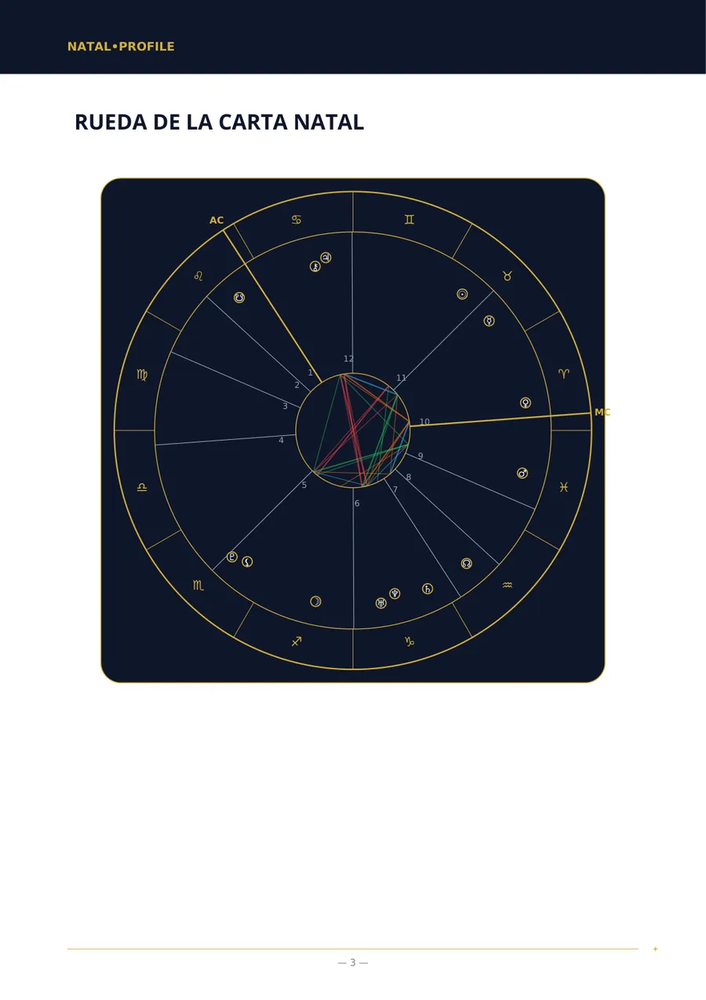
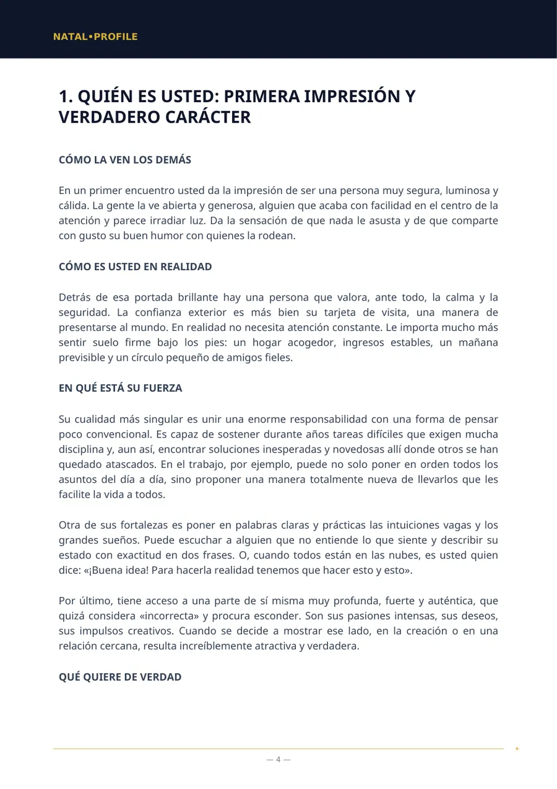
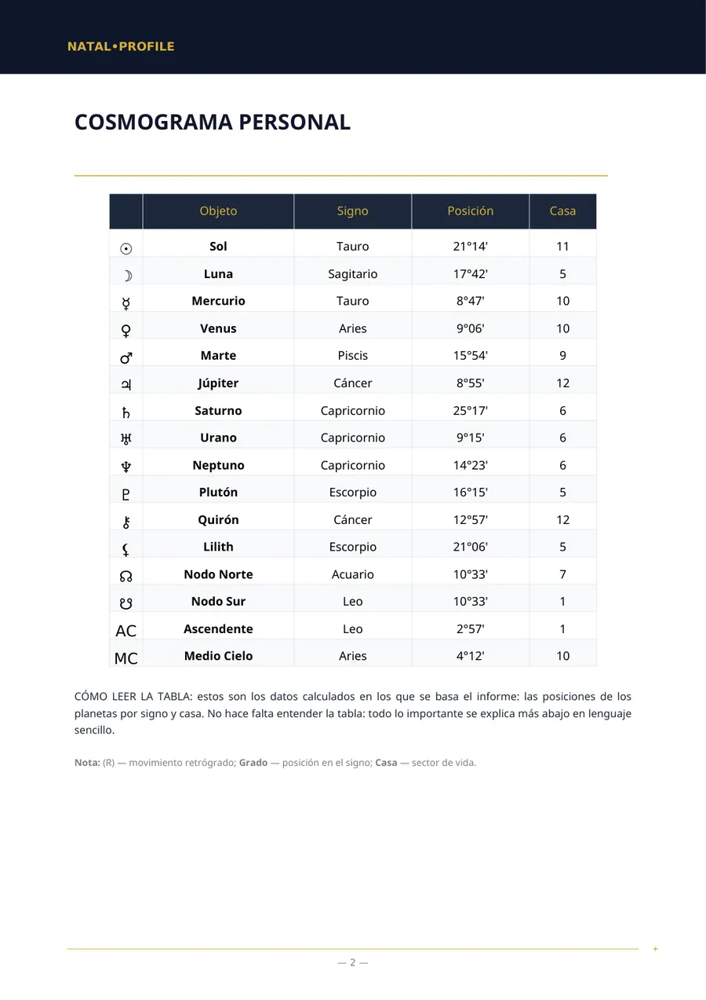
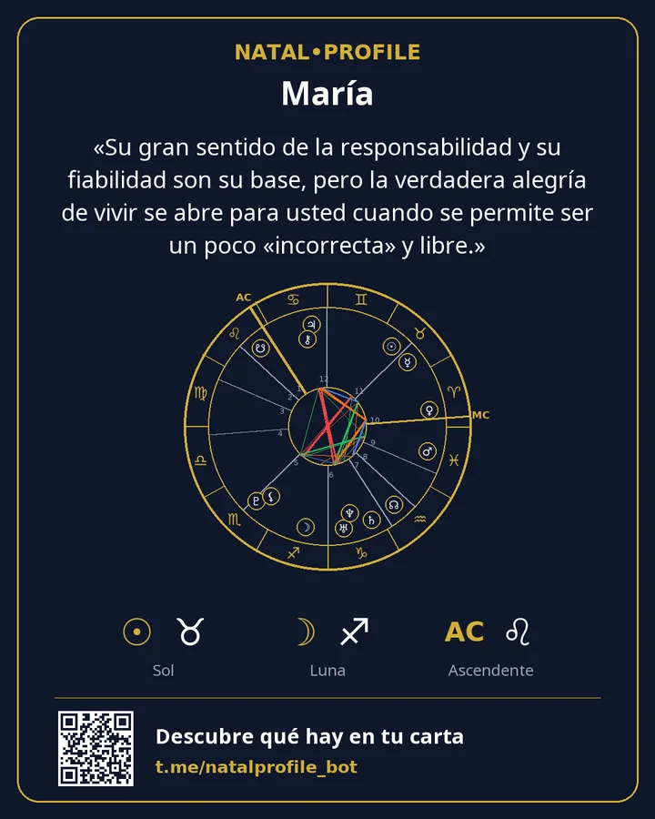

Tu carta natal, explicada en lenguaje sencillo
Indica tu fecha, hora y ciudad de nacimiento y en unos minutos recibes un PDF: cómo es tu carácter, dónde está tu fuerza, qué te frena y por dónde empezar. Sin jerga y sin frases genéricas sobre el signo.
- Cálculo con las Efemérides Suizas
- 15 idiomas
- Sin suscripción
Dos cálculos rápidos
Se hacen en tu navegador. No se envía ni se guarda nada.
Signo solar y elemento
Analizar toda la carta →El signo solar es uno de las decenas de puntos de una carta. Un informe tiene en cuenta todos los planetas, las casas y los vínculos entre ellos.
Número del camino de vida
Obtener el análisis numerológico →Se calcula igual que en el informe del bot: se suman las cifras de la fecha hasta obtener una sola. Los números del nombre se calculan en el bot.
Cómo es un informe
Páginas reales del informe «Carta natal». Es un ejemplo: los datos de nacimiento son ficticios.




«Su gran sentido de la responsabilidad y su fiabilidad son su base, pero la verdadera alegría de vivir se abre para usted cuando se permite ser un poco «incorrecta» y libre.»
Qué puedes pedir
Las listas de capítulos de las páginas de informes son las que recibes en el PDF. Los precios están en Telegram Stars.
Carta Natal (Análisis Completo)
Un análisis completo de tu carácter a partir de la fecha, la hora y el lugar de nacimiento.
Carta Natal (Análisis Básico)
Un análisis de tu carácter cuando no se conoce la hora de nacimiento.
Análisis de Compatibilidad (Revisión Completa)
Dos personas: qué os atrajo, en qué discrepáis y qué os aportáis.
Análisis de Compatibilidad (Revisión Básica)
Compatibilidad de caracteres cuando no se conoce la hora de nacimiento.
Análisis Profesional y Financiero
En qué destacas en el trabajo, qué ocupaciones te encajan y cómo te manejas con el dinero.
Carta del Niño — Una guía para tu hijo
Qué necesita tu hijo para sentirse tranquilo y en qué apoyarlo.
Pronóstico Anual (Retorno Solar)
Los temas de tu año, de cumpleaños a cumpleaños, con periodos fechados.
Horóscopo de hoy
Un pronóstico para hoy según la hora exacta de los aspectos de la Luna.
Numerología por Nombre y Fecha de Nacimiento
Los números de tu nombre y de tu fecha de nacimiento según el sistema pitagórico.
Carta Védica (Jyotish)
Una carta védica: lagna, grahas, nakshatra y periodos dasha.
Cómo funciona
Del primer mensaje al archivo listo en unos minutos.
Abre el bot
En Telegram, sin registro ni contraseñas.
Introduce tus datos
Nombre, fecha, hora y ciudad de nacimiento. La ciudad se elige de una lista.
Recibe el PDF
Normalmente en menos de 5 minutos. El archivo llega al chat.
Guarda la tarjeta
Una imagen con tu carta y la frase clave del informe.
Pago
Los informes se pagan con Telegram Stars en el propio chat con el bot. No hay suscripción: pagas una vez por informe.
El primer capítulo del análisis natal con tu carta y un horóscopo del día: una vez cada uno, sin pagar.
Pagas un informe y recibes un enlace. Tu amigo lo abre, introduce sus datos y recibe el análisis.
El bot tiene la ayuda «¿No puedes pagar?» y el soporte responde en Telegram.
Tus datos
La fecha, la hora y el lugar de nacimiento solo se necesitan para calcular la carta y escribir el informe.
Cuando se envía el PDF, se eliminan el nombre, la fecha, la hora y el lugar de nacimiento.
El PDF permanece 24 horas en el servidor y luego se borra. Tú lo conservas en el chat.
Las calculadoras funcionan en tu navegador. El sitio no tiene formularios, registro ni rastreadores.
Preguntas frecuentes
No sé mi hora de nacimiento. ¿Qué hago?
Elige un informe «sin hora de nacimiento». No incluye las casas ni el ascendente, pero el carácter, los sentimientos, la forma de pensar y las relaciones se describen sin ellos.
¿En qué se diferencia de un horóscopo por signo?
Un horóscopo por signo usa solo la posición del Sol. Un informe calcula todos los planetas, las casas y los vínculos entre ellos para tu fecha, hora y lugar de nacimiento.
¿Quién escribe el texto del informe?
Las posiciones planetarias las calcula un programa con las Efemérides Suizas. Después, un modelo de lenguaje redacta el texto a partir de esos cálculos siguiendo reglas fijas.
¿En qué idiomas hay informes?
En quince: inglés, ruso, español, hindi, portugués, vietnamita, turco, indonesio, uzbeko, kazajo, francés, alemán, italiano, árabe y persa.
¿Puedo pedir un reembolso?
El informe se crea personalmente para ti, por eso el pago no se devuelve una vez entregado el PDF. Si un informe no se generó por nuestra culpa, se devuelve el importe completo.
Empieza por el capítulo gratis
Calculamos tu carta y te enviamos el primer capítulo del análisis real. Si te gusta, pides el completo.